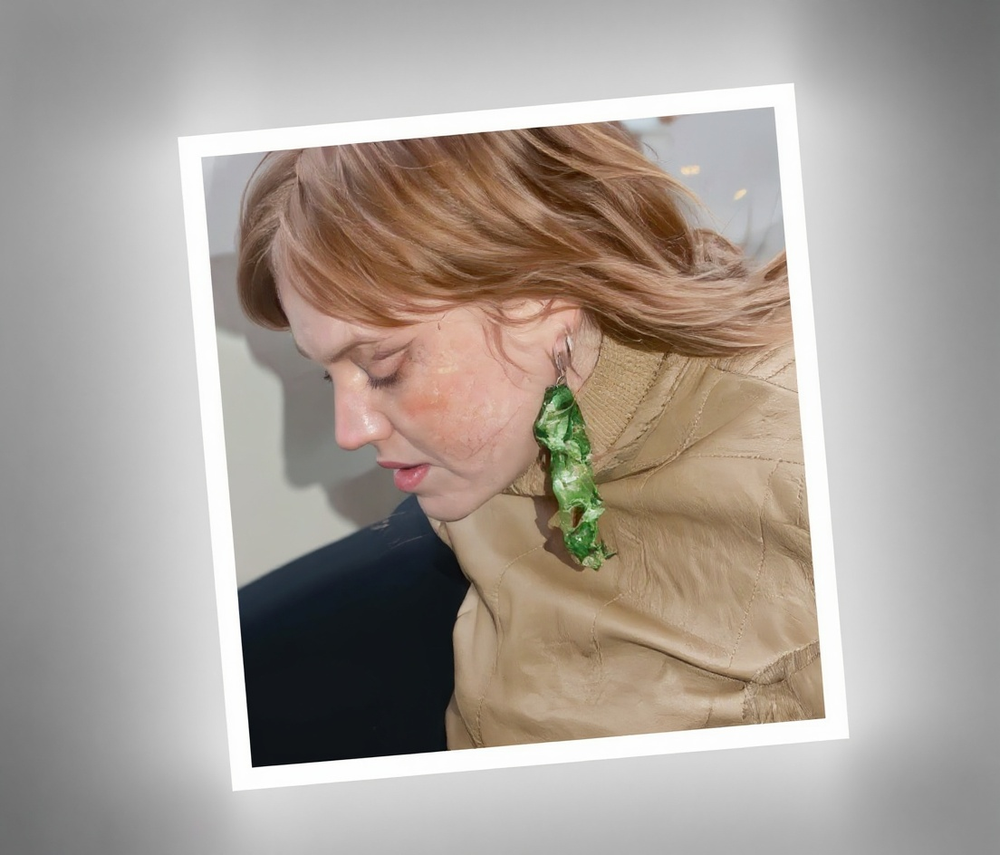
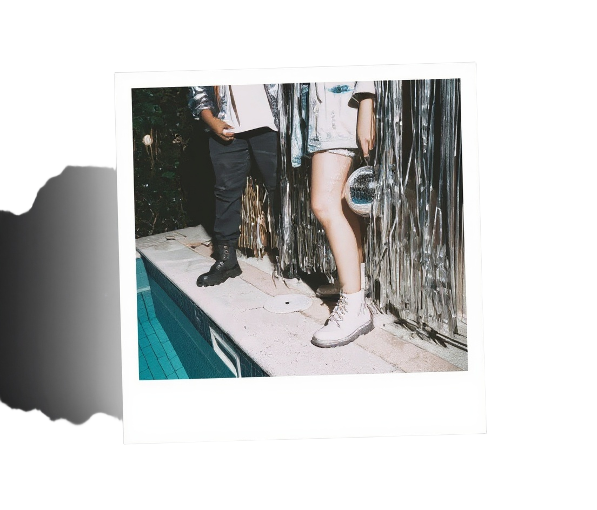
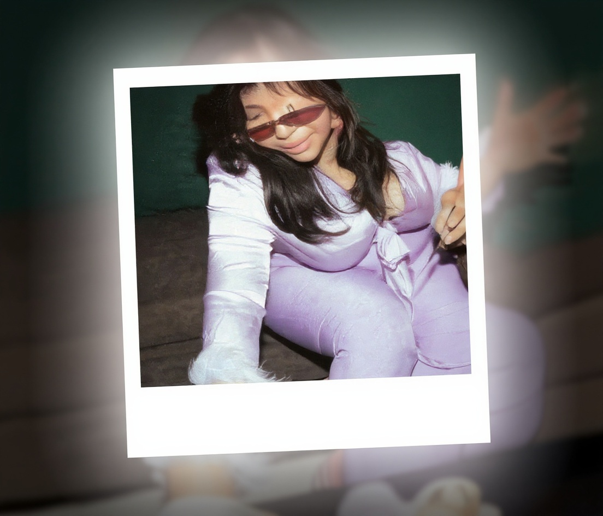

GIRL’S
PARTY
Finger foods, like mini sandwiches, fruit skewers, and cupcakes, are perfect for easy snacking. As for activities, there are endless possibilities, like karaoke, board games, and DIY crafts.
SATURDAY
8 PM



123 Anywhere St., Any City
www.reallygreatsite.com